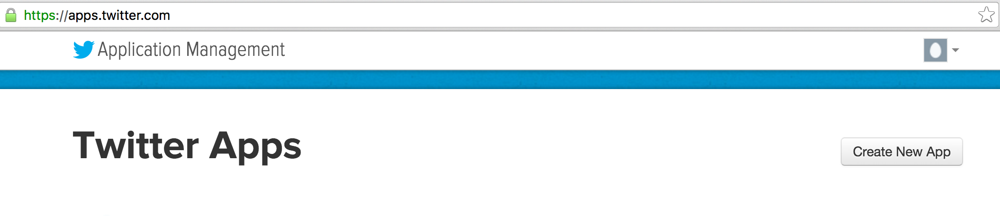
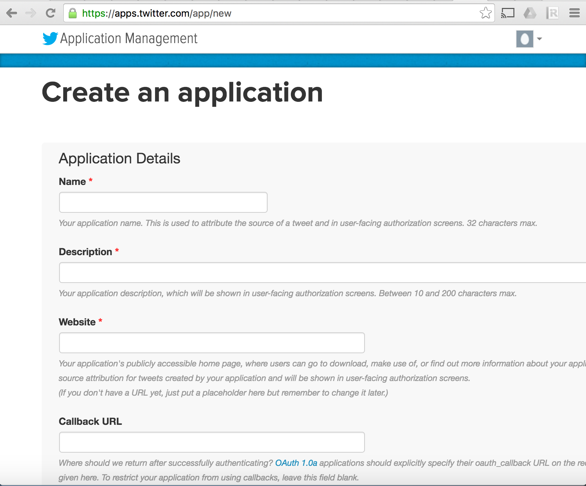
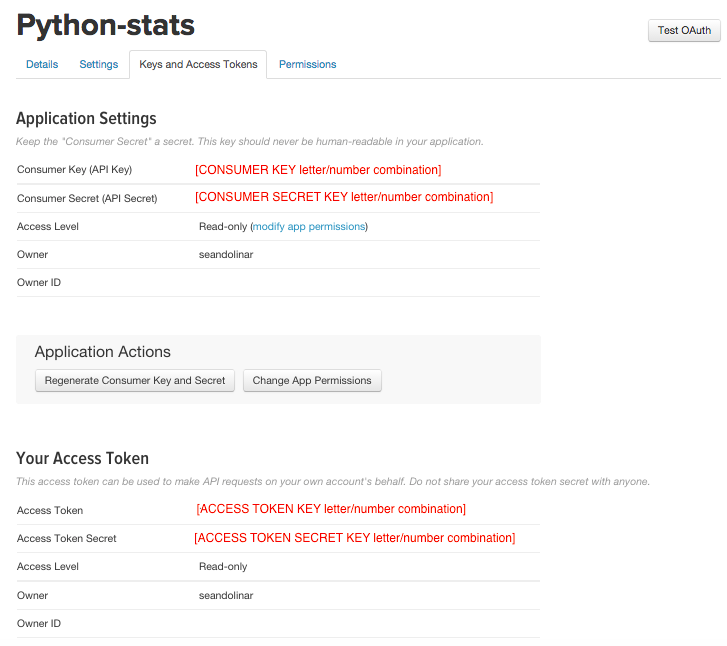

Grabbing twitter Data
Posted on Mon 15 August 2016 in misc
Table of Contents¶

Introduction:¶
Twitter is one of the ten most visited web sites around the world. Its a microblogging platform that allows you share messages of lenght not more than 140 characters. Not just that , but it also helps you discover messages related to the topics you are intrested in. It can be usefull in many ways. Since its one of the most used websites, there is a lot of data flowing through its network which could used for varius research purposes. Fourtunately twitter decided to share this huge data with some limitations ofcourse to the public. Twitter offers API (Application Programing Interface) to do this. In this tutorial we will be exploring Twitter API and what it has to offer and how we can use some of these to obtain the data that we want.
Understanding the Limitations:¶
Twitter offers many ways to access its data through its API. Each way has its pros and cons. Some of the limitations you come across are:
- The amount of data you can get
- The number of requests you can make (API rate limits)
- Getting historical data i.e tweets from the past. etc
We need to understand the limitations of the API thorugly along with what they have to offer before we go ahead and build applications.
Twitter Access keys:¶
In order to build programs that use the twitter API we need Twitter access keys( also know as OAuth Access tokens). The Access keys can be generated on the twitter developer portal. The following are the required steps you need to follow to generate the access keys:
First you must have twitter account. If you dont have one, please create one. Every twitter account is associated with a mobile number.
Once you have your twitter account you can log into the twitter dev account http://apps.twitter.com/ using the same credentials as your twitter account.
Create new app.
Fill in the necessary details in the form pagee. If all the fields are filed in properly a new page will be loaded.
Now open the “Keys and Access Tokens” tab. Scroll down and click “Create my access token”. This will generate the Access token and Access token secret. Copy your “Access token” and “Access token secret” along with API Key and API secret which is present at the top of the same page.

- Congratulations! now that we have access tokens we can start using the API.
Twitter libraries:¶
Since we will be using python through out this tutorial we will be disucssing packages related to python. But if you prefer using other languages feel free to explore them. This page has a list of various libraris for accessing twitter API in various programing languages: twitter Libraries . libraries make life easy when it comes to programming. For this tutorial we will be using the twitter-python libary.
Installing:¶
$ pip install python-twitter
You will get the following message at the end if it worked: Successfully installed future-0.15.2 python-twitter-3.1
Usage:¶
To start using the twitter-python library you need the access keys that you have generated earlier:
- API key
- API secret
- Access token
- Access token secret
Try the following in the python Interpreter or ipython:
# The keys have been displayed here becuase they are not to be shared.
# The value inside quotes must be replaced by your keys if you are using this.
import twitter
#api = twitter.Api(consumer_key='consumer_key',consumer_secret='consumer_secret',access_token_key='access_token',access_token_secret='access_token_secret')
api = twitter.Api(consumer_key='VXzRzW62biX8KW7A4XycqIeCL',
consumer_secret='Dr1ak1sdfL2CdpGCp2IWYg3xbOYFWmJ2H3Tm6ZkgMPo5ejqBrY',
access_token_key='78477561-2SitfsaoG4zvrq5jk1oMGahSgtBvQ9b7noe1XNNSX',
access_token_secret='vYNqoq4IrLpRINUQdn06aAWaeoSz7G3PNNSSt23XIlx1F')
# to see if you have given the access keys properly:
print api.VerifyCredentials()
The response will be something like this {"id": 16133, "location": "Philadelphia", "name": "bear"}, a json object with a summary of details of your account.
Twitter Streaming API¶
The twitter Streaming API gives you access to the current stream messages i.e you get access to the tweets that are currently being pushed to the twitter. You may no be able to access the whole but you will get <=1 percent of the twitter global stream and thats substantial amount of data. But on contrary to the REST API offered by twitter, the streaming API has no rate limits. The only limit it has is the cap on the number of messages it delivers.
The streaming API gives you the number of messages it couldnt deliver. This is called the limit Notices.
Usage:¶
Twitter API enables us to specify parameters for filtering the data. The parameters can be keywords that we are looking for in tweets or geo locations or usernames or user_id's.
Parameters :¶
These are the various parameters that you can specify to get the data which you want from twitter:
- Keywords
- Geo location
- usernames
- userid (These are the unique ids assigned by twitter to each user)
- For example lets say we want to grab all tweets that have the word "life". Hence I use this keyword as a parameter to query the twitter Streaming API. The streaming API returns tweets that have the word "life" from the current pushed messages.
With python-twitter library this is how we do this:
# used break becuase : I just want to exit the loop for printing one line
for tweet in api.GetStreamFilter(track='life'):
print tweet
break
That is how the output looks like. The data is in JSON format. Surprisingly all that information is just realated to one tweet. We will cover later more on JSON format and structure of the json data that we get from twitter, for now lets focus on the collection of the data from twitter.
Since we are trying to grab the streaming data, which is a continious process (unless we stop it), it's better that we save the data to a file. Make sure this file is located on a disk with considerable space as the file size keeps on increasing due to the nature of the streaming data.
# lets save the json data to a file: streamingData.json
# "\n" is new line. We save the data to a file,
# with each new line we save all the information related to one tweet
f = open('./streamingData.json', 'w')
for tweet in api.GetStreamFilter(track='life'):
f.write(json.dumps(tweet))
f.write('\n')
Twiiter Search API:¶
Twitter rest API is another way to get data from twitter. But unlike the streaming API the rest API has the API rate limitaitons i.e the number of calls or requests that you make are limited to certain number for a given window of time (most of them have 15 minutes window). But with rest API your search parameters are applied against the historical data of one week. These api rate limits vary depending on the kind of query you are making.
Using Search API with python-twitter:
The search API expects encoded url format. You supply a hardcoded url which has the parameters listed in it. This is how you do this with python-twitter:
# search with keyword "life" with q=life:
# limit the number of tweets to 100 with count=100
# limit tweets to the most recent tweets with result_type=recent
# The paratmeters "count", "q", "result_type" are seperated by '&'.DS_Store
# %20 just implies a space.
results = api.GetSearch( raw_query="q=life%20&result;_type=recent&count;=100")
print len(results) # count the number of records returend by the query
print results[0] # print and see an example one tweet instance.
Try and Explore:¶
Try set up a streaming for twitter using the geolocations as the query paramter.
Try the same with the search API as well.
references
- For referecne twitter has an excellent documentation of twitter API.
- For references to python-twitter library. You can use any library to try this.
Now that we have all this JSON data from twitter stored in a file, let's take a quick peak at what is JSON and how we can parse this data using python